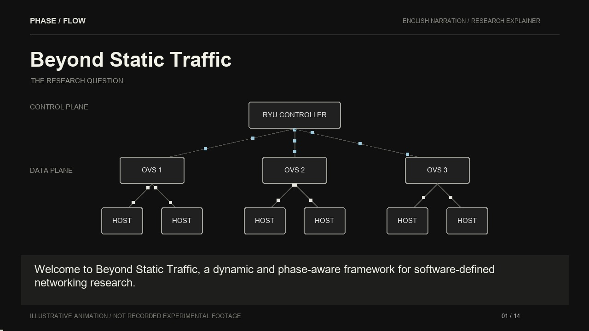

Configure
Build line or star topologies with Mininet, programmable switches, and a Ryu controller.
TOPOLOGY + SEEDChange the conditions. Follow the packets. Discover what the evidence says.

FEATURED VIDEO5:47Watch the research filmEnglish narration · 14 chapters · CaptionsKeyboard: focus the slider and use ← → to change phase. Each phase updates the illustration and reported H28 values below.
Continuous UDP and ICMP communication represents normal network activity across the testbed.
Measured H28 phase means; not live readings. Topology and workload controls change the illustration only.
This interactive model explains the supplied paper. It does not execute attacks, detect live intrusions, or establish independently verified malicious ground truth.
A change in network behavior is not automatically an attack. This framework separates operational conditions from workload activity, so every observation keeps its context.
Build line or star topologies with Mininet, programmable switches, and a Ryu controller.
TOPOLOGY + SEEDRun benign and bounded synthetic workloads through stable, constrained, and recovery phases.
6 WORKLOAD SCENARIOSAlign flow counters, RTT samples, UDP measurements, and timestamped experiment events.
MULTI-SOURCE TELEMETRYPreserve run identity, mark transition windows, and label activity using execution evidence.
EVIDENCE-GROUNDED LABELSSwitch phases to explore the network’s measured response. Values below are phase means from the paper’s H28 evaluation; the animation is an illustration.
H28 aggregate results are not separated by topology in the paper. Topology controls change the illustration only. Zero observed ICMP loss does not establish perfect loss fidelity.
A detailed English narrated walkthrough of the framework, six workloads, dataset construction, and reported H23/H28 results. Includes synchronized on-screen captions, chapter navigation, and a full transcript.
Press Play to hear the English narration. Captions are included in the picture.
English narration uses a synthesized voice. This is an authored visual explanation of the paper, not recorded experimental footage. Packet timing, ports, and geometry are illustrative. No real attack execution or live network connection.
Select a scenario to see its packet behavior, then switch network phases to explore the context. Animations explain concepts; reported results remain in the measured findings.
Continuous UDP and ICMP communication represents normal network activity. Its observations provide context across changing network conditions.
Activity labels follow recorded workload intervals. Network constraints are tracked separately from benign activity.
Separate experimental campaigns examine dataset construction, prospective classification, and network fidelity.
observation intervals · 20 columns
24 runs · 72 observations in each splitnew intervals · 16 additional runs
Five frozen models · no retrainingphase-specific network conditions
12 runs · stable → constrained → recoverySynthetic probing classification, not independently verified malicious attack detection. Source: Table IV.
Complete run IDs stay in one partition to reduce leakage from correlated observations.
Each split: 60 class-0 + 12 synthetic probing observations.Gradient Boosting reached 89.58% balanced accuracy; Random Forest had the highest recall at 87.50%. Statistical significance between models was not established. Independent malicious ground truth and generalization to unseen attack families remain unverified.
Explore the supplied H14 export directly. Filter by partition, operational phase, topology, and scenario. Each row preserves its experimental run ID.
| Run ID | Partition | Scenario | Phase | Interval | Probe label | RTT (ms) | Delivery (Mbps) |
|---|
Run IDs do not overlap between train, validation, and test partitions. The checksum identifies the original full CSV. The displayed delivery measurement is an H14 field; it is distinct from the H28 TCP bulk goodput evaluation.
29 supplied graphs, organized by experimental scope. Start with the paper’s H23 and H28 findings, then explore dataset characteristics and supplementary H14 model analysis.
Loading original graph files…
Download the supplied exports and source tables. Original ZIP packages are preserved unchanged, including their reports, audit context, and scientific limitations.
The original 216-row, 20-column dataset, including partition, run identity, phase, and synthetic-probing labels.
Download full CSV ↓ORIGINAL PACKAGE / ZIPMain splits, supporting experiments, model comparison reports, network-fidelity results, and claim audits.
Download dataset package ↓ORIGINAL PACKAGE / ZIPAll 29 PNG graphs, original data and reports, supplementary H14 metrics, and paper reference tables.
Download guide package ↓PAPER / TABLE IV / CSVBalanced accuracy, recall, and false positive rate for the five frozen classification candidates.
Download H23 table ↓PAPER / TABLE VI / CSVReported stable, constrained, and recovery mean RTT, TCP bulk goodput, and ICMP loss.
Download H28 table ↓SUPPLEMENTARY ANALYSIS / CSVSeparate validation and test analysis from the guide package. These results do not describe H23 prospective evaluation.
Download supplementary metrics ↓Independent malicious ground-truth adjudication remains pending. These packages support controlled synthetic-workload analysis and network-fidelity findings within the reported experimental scope.
Beyond Static Traffic: A Dynamic and Phase-Aware SDN Framework for Evidence-Grounded Intrusion Detection Dataset Generation
Read the full paper ↗Download PDF ↓